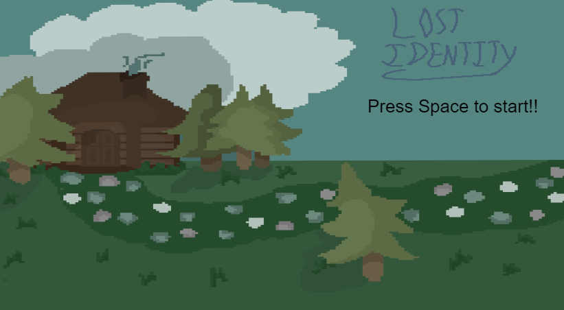
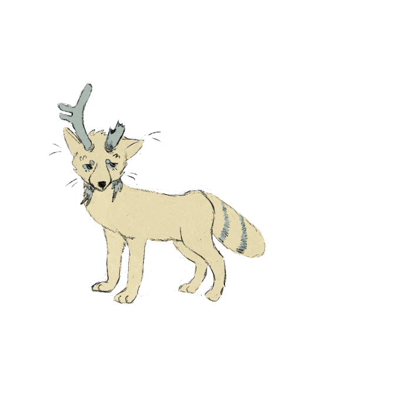

Lost identity is a 2d adventure game. In a world where the player plays as Ink, the protector of The Spruce Thicket Forest. Ink awakens one morning to find their special mask missing, taken by a strange creature. Now, they must venture into the forst and reclaim the lost shards of their mask, helping the distressed inhabitants of the forest on the way. This game is still in progress.
 